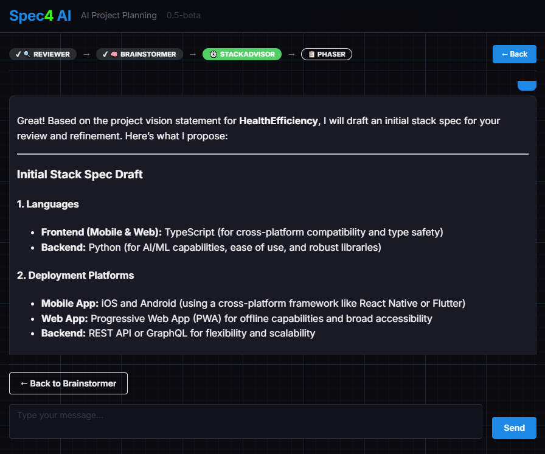

Every technology decision, made deliberately.
Choosing a tech stack is one of the most consequential decisions in a project — and one of the easiest to get wrong when you're moving fast, or when your AI developer tool is making decisions for you. StackAdvisor walks you through every layer of the decision, presents honest trade-offs, and produces a stack spec that Phaser can execute precisely.

StackAdvisor works through the technology stack in order, one decision at a time:
If a code review is present, StackAdvisor actively compares its recommendations against your existing choices. When it detects a conflict, it explains the implication and offers three concrete paths:
The confirmed stack_spec JSON — from the healthcare app example:
Open Spec4 and let StackAdvisor guide you through every technology decision — one choice at a time.